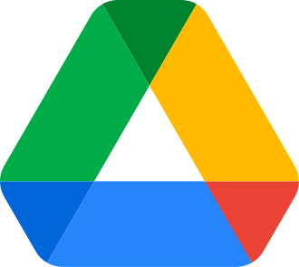
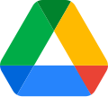
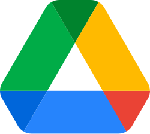
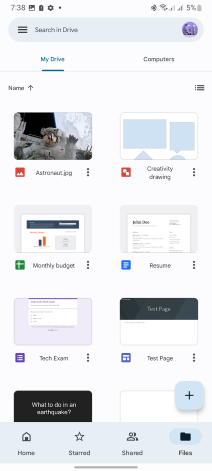
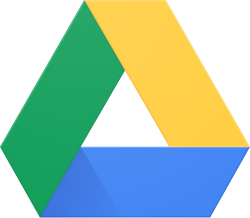

Google Drive
Source: https://en.wikipedia.org/wiki/Google_Drive
Category: products_consumer
Depth: 1
Summary
Google Drive is a file-hosting service and synchronization service developed by Google. Launched on April 24, 2012, Google Drive allows users to store files in the cloud, synchronize files across devices, and share files. In addition to a web interface, Google Drive offers apps with offline capabilities for Windows and macOS computers, and Android and iOS smartphones and tablets. Google Drive encompasses Google Docs, Google Sheets, and Google Slides, which are a part of the Google Docs Editors office suite that allows collaborative editing of documents, spreadsheets, presentations, drawings, forms, and more. Files created and edited through the Google Docs suite are saved in Google Drive.
Images






Full Article
Cloud storage and file synchronization service
Google Drive is a file-hosting service and synchronization service developed by Google. Launched on April 24, 2012, Google Drive allows users to store files in the cloud (on Google servers), synchronize files across devices, and share files. In addition to a web interface, Google Drive offers apps with offline capabilities for Windows and macOS computers, and Android and iOS smartphones and tablets. Google Drive encompasses Google Docs, Google Sheets, and Google Slides, which are a part of the Google Docs Editors office suite that allows collaborative editing of documents, spreadsheets, presentations, drawings, forms, and more. Files created and edited through the Google Docs suite are saved in Google Drive.
Google Drive offers users 15 GB of free storage, sharing it with Gmail and Google Photos. Through Google One, Google Drive also offers paid plans at tiers of 100 GB and 2 TB, along with a premium 2 TB plan that comes with Google's artificial intelligence. Files uploaded can be up to 750 GB in size. Users can change privacy settings for individual files and folders, including enabling sharing with other users or making content public. On the website, users can search for an image by describing its visuals, and use natural language to find specific files, such as "find my budget spreadsheet from last December".
The website and Android app offer a Backups section to see what Android devices have data backed up to the service, and a completely overhauled computer app released in July 2017 allows for backing up specific folders on the user's computer. A Quick Access feature can intelligently predict the files users need.
Google Drive is a key component of Google Workspace, Google's monthly subscription offering for businesses and organizations that operated as G Suite until October 2020. As part of select Google Workspace plans, Drive offers unlimited storage, advanced file audit reporting, enhanced administration controls, and greater collaboration tools for teams.
Following the launch of the service, Google Drive's privacy policy was criticized by some members of the media. Google has one set of Terms of Service and Privacy Policy agreements that cover all of its services. Some members of the media noted that the agreements were no worse than those of competing cloud storage services, but that the competition uses "more artful language" in the agreements, and also stated that Google needs the rights in order to "move files around on its servers, cache your data, or make image thumbnails".
Platforms
Google Drive was introduced on April 24, 2012, with apps available for Windows, macOS, and Android, as well as a website interface. The iOS app was released later in June 2012.
Computer apps
Google Drive is available for PCs running Windows 7 or later, and Macs running OS X Catalina or later. Google indicated in April 2012 that work on Linux software was underway, but there was no news on this as of November 2013. In April 2012, Google's then-Senior Vice President Sundar Pichai said that Google Drive would be tightly integrated with ChromeOS version 20. In October 2016, Google announced that, going forward, it would drop support for versions of the computer software older than 1 year. In June 2017, Google announced that a new app called Backup and Sync would replace the existing separate Google Drive and Google Photos desktop apps, creating one unified app on desktop platforms. Originally intended for release on June 28, its release was delayed until July 12. In September 2017, Google announced that it would discontinue the Google Drive desktop app in March 2018 and end support in December 2017.
Google Drive for desktop
In March 2017, Google introduced Drive File Stream, a desktop application for G Suite (now Google Workspace) customers using Windows and macOS computers that maps Google Drive to a drive letter on the operating system, and thus allows easy access to Google Drive files and folders without using a web browser. It also featured on-demand file access, when the file is downloaded from Google Drive only when it is accessed. Additionally, Drive File Stream supports the Shared Drives functionality of Google Workspace.
In July 2017, Google announced their new downloadable software, Backup and Sync, for individual users of Google Drive. It was made mainly to replace the Google Drive desktop app, which was discontinued. Its main function is for the user to be able to set certain folders to constantly sync onto their Google Account's Drive. The synced folders and files count against the shared quota allocated between Gmail, Google Photos, and Google Drive.
In early 2021, Google announced that it would be combining its Drive File Stream and Backup and Sync products into one product, Google Drive for Desktop, which will support features previously exclusive to each respective Client. In July 2021, Google Drive for Desktop, a new app for Windows and Mac, was released replacing "Backup and Sync" and "Drive File Stream". Google Drive for desktop based on File Stream, which will support features previously exclusive to each respective Client. Google stopped supporting Backup and Sync as of October 1, 2021.
In 2023, a bug in Google Drive for Desktop resulted in a small number of files over a period of 6-months to disappear from user's accounts. A fix was released in December of that year.
Mobile apps
Google Drive is available for Android smartphones and tablets running Android 6.0 "Marshmallow" or later, and iPhones and iPads running iOS 15 or later.
In August 2016, Google Drive ended support for Android devices running Android 4.0 "Ice Cream Sandwich" or older versions, citing Google's mobile app update policy, which states: "For Android devices, we provide updates for the current and 2 previous Android versions." According to the policy, the app will continue to work for devices running older Android versions, but any app updates are provided on a best-efforts basis. The policy also states a notice will be given for any planned end of service.
On May 4, 2020, Google rolled out a new feature update in its Google Drive app version 4.2020.18204 for iOS and iPadOS, known as Privacy Screen, which requires Face ID or Touch ID authentication whenever the app is open.
Website interface
Google Drive has a website that allows users to see their files from any Internet-connected computer, without the need to download an app.
The website received a visual overhaul in 2014 that gave it a completely new look and improved performance. It also simplified some of the most common tasks, such as clicking only once on a file to see recent activity or share the file and added drag-and-drop functionality, where users can simply drag selected files to folders, for improved organization.
A new update in August 2016 changed several visual elements of the website; the logo was updated, the search box design was refreshed, and the primary color was changed from red to blue. It also improved the functionality to download files locally from the website; users can now compress and download large Drive items into multiple 2 GB .zip files with an improved naming structure, better Google Forms handling, and empty folders are now included in the .zip, thereby preserving the user's folder hierarchy.
In April 2024, Google rolled out support for a night mode theme to users.
Storage
Google Drive offers various tiers of storage starting with a free tier of 15 GB for individual users with options to purchase additional storage tiers for users and organizations available. This built from an initial allowance of 1 GB at launch Gmail's launch in 2004, with the free storage limit increased to 2GB in 2005, 2.8GB in 2007, 7.5GB in 2011, 10GB in 2012, and finally to 15GB in 2013. Despite initially promoting the large free storage included in its offerings, Google has not increased the storage space provided since 2013.
Google does not provide a mechanism to track storage used by individual folders in Google Drive, requiring users to utilize Filerev, an application developed by a third party for this functionality. Functionality to track total usage is available natively.
Individual user account storage
Main article: Google One
Google gives every user 15 GB (1 GB = 1 billion bytes) of free storage. This cloud storage is also shared with Gmail and Google Photos. Users can purchase additional space through either a monthly or yearly payment. The option of yearly payments was introduced in December 2016, and is limited to the 100 GB and standard 2 TB storage plans. Furthermore, the yearly payments offer a discount. In May 2018, Google announced that storage plans (including the free 15 gigabyte plan) would be moved over to Google One.
As of 2024[update], these are the storage plans offered by Google:
| Storage | Price (US$) |
|---|---|
| 15 GB | Free |
| 100 GB | $1.99/month ($19.99/year) |
| 2 TB | $9.99/month ($99.99/year) |
| 2 TB w/ AI | $19.99/month (no annual subscription provided) |
Chromebook promotions
Chromebook users can obtain 100 GB of Google Drive storage free for 12 months as long as the promotion is activated within 180 days of the Chromebook device's initial purchase. This is available in all countries where Google Drive is available. Offer can only be redeemed once per device. Used, open-box, and refurbished devices are not eligible for the offer.
Google Workspace storage
Main article: Google Workspace
Google offers 30 GB of Drive storage for all Google Workspace Starter customers, and unlimited storage for those using Google Workspace for Business. Since July 2022, the Google Workspace for Education – valid for educational institutions and Universities in particular – provides 100 TB of storage. Universities with more than 20.000 Workspace users (students, staff and related entities) are offered an optionally increased storage limit .
Storage scheme revisions
On April 24, 2012, Google Drive was introduced with free storage of 5 GB. Storage plans were revised, with 25 GB costing $2.49/month, 100 GB costing $4.99/month and 1 TB costing $49.99/month.
Originally, Gmail, Google Docs, and Picasa had separate allowances for free storage and a shared allowance for purchased storage. Between April 2012 and May 2013, Google Drive and Google+ Photos had a shared allowance for both free and purchased storage, whereas Gmail had a separate 10 GB storage limit, which increased to 25 GB on the purchase of any storage plan.
In September 2012, Google announced that a paid plan would now cover total storage, rather than the paid allocation being added to the free; e.g. a 100 GB plan allowed a total of 100 GB rather than 115 GB as previously.
In May 2013, Google announced the overall merge of storage across Gmail, Google Drive and Google+ Photos, giving users 15 GB of unified free storage between the services.
In March 2014, the storage plans were revised again and prices were reduced by 80% to $1.99/month for 100 GB, $9.99/month for 1 TB, and $99.99/month for 10 TB. This was much cheaper than competitors Dropbox and OneDrive offered at the time.
In 2018, the paid plans were re-branded as "Google One" to emphasize their application beyond Google Drive, along with the addition of a $2.99/month plan for 200 GB, and increasing the $9.99 plan to 2 TB at no additional charge.
On November 11, 2020, Google announced that it would discontinue unlimited storage for files stored using Google Docs file formats (including the Docs format, but excluding Sites) in Drive along with photos and videos uploaded to Google Photos using its "saver" (originally "High quality") setting. The update was announced to come into effect on June 1, 2021. Photos uploaded using the "saver" quality setting before June 1, as well as Google Docs, Sheets, and Slides files that were not modified after June 1, continued to be exempt from storage quotas.
In September 2021, Google added a 5 TB storage plan priced at $24.99/month.
Features
Sharing
Google Drive incorporates a system of file sharing in which the creator of a file or folder is, by default, its owner. The owner can regulate the public visibility of the file or folder. Ownership is transferable. Files or folders can be shared privately with particular users having a Google account, using the email address (usually, but not necessarily, ending in @gmail.com) associated with that account. Sharing files with users not having a Google account requires making them accessible to "anybody with the link". This generates a secret URL for the file, which may be shared via email or private messages. Files and folders can also be made "public on the web", which means that they can be indexed by search engines and thus can be found and accessed by anyone. The owner may also set an access level for regulating permissions. The three access levels offered are "can edit", "can comment" and "can view". Users with editing access can invite others to edit.
On September 13, 2021, the URL to a portion of existing files was changed, ostensibly for security reasons.
Shared files have upload limit of 400,000 items.
Artificial Intelligence
In 2024, Google began rolling out artificial intelligence features to select users of Google Drive and other Workspace tools powered by its in-house Gemini LLM. The features are currently available to users with Google One AI Premium or organizational users with the Gemini Business, Enterprise, Education, and Education Premium add-ons.
The features are largely centered around utilizing the right sidebar of Drive and other Workspace apps to including utilizing its chatbot to perform tasks with access to files stored across users' Google Accounts. Another feature allows users opening a PDF in Google Drive to summarize PDFs, synthesize its contents with other files stored in Drive, or generate new content using Gemini within their sidepanel.
Third-party apps
A number of external web applications that work with Google Drive are available from the Chrome Web Store. To add an app, users are required to sign in to the Chrome Web Store, but the apps are compatible with all supported web browsers. Drive apps operate on online files and can be used to view, edit, and create files in various formats, edit images and videos, fax and sign documents, manage projects, create flowcharts, etc. Drive apps can also be made the default for handling file formats supported by them. Some of these apps also work offline on Google Chrome and ChromeOS.
All of the third-party apps are free to install. However, some have fees associated with continued usage or access to additional features. Saving data from a third-party app to Google Drive requires user authorization the first time. In most cases, the apps continue to hold access levels until users proactively revoke their access to Google Drive.
The Google Drive software development kit (SDK) works together with the Google Drive user interface and the Chrome Web Store to create an ecosystem of apps that can be installed into Google Drive. In February 2013, the "Create" menu in Google Drive was revamped to include third-party apps, thus effectively granting them the same status as Google's own apps.
In March 2013, Google released an API for Google Drive that enables third-party developers to build collaborative apps that support real-time editing. One such app is developed by OpenAI allowing ChatGPT to access files stored in Google Drive.
Google reported that as of 2021, there were more than 5,300 public apps available in the Google Workspace Marketplace.
File viewing
The Google Drive viewer on the web allows the following file formats to be viewed:
- Native formats (Docs, Sheets, Slides, Forms, Drawings, My Maps, Jamboard, Sites)
- Image files (.JPEG, .PNG, .GIF, .TIFF, .BMP, .WEBP .HEIF .SVG)
- Video files (.WEBM, .MPEG4, .3GPP, .MOV, .AVI, .MPEG, .MPEGPS, .WMV, .FLV, .OGG .VOB)
- Audio formats (.MP3, .M4A, .WAV, .OGG .Opus)
- Text files (.TXT)
- Markup/Code (.CSS, .HTML, .PHP, .C, .CPP, .H, .HPP, .JS .Java .PY)
- Microsoft Word (.DOC and .DOCX)
- Microsoft Excel (.XLS and .XLSX)
- Microsoft PowerPoint (.PPT and .PPTX)
- Adobe Portable Document Format (.PDF)
- Apple Pages (.PAGES)
- Adobe Illustrator (.AI)
- Adobe Photoshop (.PSD)
- Autodesk AutoCad (.DXF)
- Scalable Vector Graphics (.SVG)
- PostScript (.EPS, .PS)
- Python (.PY)
- Fonts (.TTF)
- XML Paper Specification (.XPS)
- Archive file types (.ZIP, .RAR, tar, gzip)
- .MTS files
- Raw Image formats (.DNG)
- Apple Keynote (.KEY)
- Apple Numbers (.Numbers)
Files in other formats can also be handled through third-party apps that work with Google Drive, available from the Chrome Web Store.
File limits
Files that are uploaded, but not converted to Google Docs, Sheets, or Slides formats, may be up to 5 TB in size. There are also limits, specific to file type, listed below:
- Documents (Google Docs)
- Up to 1.02 million characters, regardless of the number of pages or font size. Document files converted to .gdoc Docs format cannot be larger than 50 MB (1 MB = 1 million bytes). Images inserted cannot be larger than 50 MB, and must be in either .jpg, .png, or non-animated .gif formats.
- Spreadsheets (Google Sheets)
- Up to 10 million cells, or 18,278 columns.
- Presentations (Google Slides)
- Presentation files converted to .gslides Slides format cannot be larger than 100 MB. Images inserted cannot be larger than 50 MB, and must be in either .jpg, .png, or non-animated .gif formats.
Overall file limit
On April 3, 2023, it was reported that Google had also quietly introduced a user "creation limit" of 5 million files around February 2023. This was later removed one day after it was publicly discovered following user backlash.
Quick Access
Introduced in the Android app in September 2016, Quick Access uses machine learning to "intelligently predict the files you need before you've even typed anything". The feature was announced to be expanded to iOS and the web in March 2017, though the website interface received the feature in May.
Search
Search results can be narrowed by file type, ownership, visibility, and the open-with app. Users can search for images by describing or naming what is in them. For example, a search for "mountain" returns all the photos of mountains, as well as any text documents about mountains. Text in images and PDFs can be extracted using optical character recognition. In September 2016, Google added "natural language processing" for searching on the Google Drive website, enabling specific user search queries like "find my budget spreadsheet from last December". In February 2017, Google integrated Drive and the Google Search app on Android, letting users search for keywords, switch to an "In Apps" tab, and see any relevant Drive files.
Backups
In December 2016, Google updated the Android app and website with a "Backups" section, listing the Android device and app backups saved to Drive. The section lets users see what backups are stored, the backups' sizes and details, and delete backups.
In June 2017, Google announced that a new app, "Backup and Sync", would be able to synchronize any folder on the user's computer to Google. The app was released on July 12, 2017.
Metadata
A Description field is available for both files and folders that users can use to add relevant metadata. Content within the Description field is also indexed by Google Drive and searchable.
Accessibility to the visually impaired
In June 2014, Google announced a number of updates to Google Drive, which included making the service more accessible to visually impaired users. This included improved keyboard accessibility, support for zooming and high contrast mode, and better compatibility with screen readers.
Save to Google Drive browser extension
Google offers an extension for Google Chrome, Save to Google Drive, that allows users to save web content to Google Drive through a browser action or through the context menu. While documents and images can be saved directly, webpages can be saved in the form of a screenshot (as an image of the visible part of the page or the entire page), or as a raw HTML, MHTML, or Google Docs file. Users need to be signed into Chrome to use the extension.
Mobile apps
The main Google Drive mobile app supported editing of documents and spreadsheets until April 2014, when the capability was moved to separate, standalone apps for Google Docs, Google Sheets, and Google Slides. The Google Drive app on Android allows users to take a photo of a document, sign, or other text and use optical character recognition to convert to text that can be edited. In October 2014, the Android app was updated with a Material Design user interface, improved search, the ability to add a custom message while sharing a file, and a new PDF viewer.
Encryption
Before 2013, Google did not encrypt data stored on its servers. Following information that the United States' National Security Agency had "direct access" to servers owned by multiple technology companies, including Google, the company began testing encrypting data in July and enabled encryption for data in transit between its data centers in November. However, Google Drive did not provide client-side encryption until 2021, when Google Workspace Enterprise Plus and Education Plus customers gained access to client-side encryption.
Professional editions
See also: Google Workspace
Google Drive Enterprise
Google Drive Enterprise (formerly Google Drive for Work) is a business version, as part of Google Workspace (formerly Google Apps for Work or G Suite), announced at the Google I/O conference on June 25, 2014, and made available immediately. The service features unlimited storage, advanced file audit reporting, and eDiscovery services, along with enhanced administration control and new APIs specifically useful to businesses. Users can upload files as large as 5 TB. A press release posted on Google's Official Enterprise Blog assured businesses that Google would encrypt data stored on its servers, as well as information being transmitted to or from them. Google delivers 24/7 phone support to business users and has guaranteed 99.9% uptime for its servers.
In September 2015, Google announced that Google Drive for Work would be compliant with the new ISO/IEC 27018:2014 security and privacy standard, which confirmed that Google would not use data in Drive for Work accounts for advertising, enabled additional tools for handling and exporting data, more transparency about data storage, and protection from third-party data requests.
In July 2018, Google announced a new edition, called Drive Enterprise, for businesses that don't want to buy the full Google Workspace. Drive Enterprise includes Google Docs, Sheets, and Slides which permits collaborative editing of documents, spreadsheets, presentations, drawings, forms, and other file types. Drive Enterprise also allows users to access and collaborate on Microsoft Office files and 60+ other file types. The pricing of Drive Enterprise is based on usage, with $8 per active user per month, plus $0.04 per GB per month.
Google Drive for Education
Google Drive for Education was announced on September 30, 2014. It was made available for free to all Google Apps for Education users. It includes unlimited storage and support for individual files up to 5 TB in size in addition to full encryption.
Shared Drives
In September 2016, Google announced Team Drives, later renamed Shared Drives, as a new way for Google Workspace teams to collaborate on documents and store files. In Shared Drives, file/folder sharing and ownership are assigned to a team rather than to an individual user. Since 2020, Shared Drives had an ability to assign different access levels to files and folders to different users and teams, and an ability to share a folder publicly. Unlike individual Google Drive, Shared Drives offer unlimited storage.
Docs, Sheets and Slides
Main article: Google Docs Editors
Google Docs, Google Sheets, and Google Slides constitute a free, web-based office suite offered by Google and integrated with Google Drive. It allows users to create and edit documents, spreadsheets, and presentations online while collaborating in real-time with other users. The three apps are available as web applications, as Chrome apps that work offline, and as mobile apps for Android and iOS. The apps are also compatible with Microsoft Office file formats. The suite also consists of Google Drawings, Google Forms, Google Sites, and Google Keep. While Forms and Sites are only available as web applications, Drawings is also available as a Chrome app, while a mobile app for Keep is also available. The suite is tightly integrated with Google Drive, and all files created with the apps are by default saved to Google Drive.
Updates
Updates to Docs, Sheets, and Slides have introduced features using machine learning, including "Explore", offering search results based on the contents of a document, answers based on natural language questions in a spreadsheet, and dynamic design suggestions based on contents of a slideshow, and "Action items", allowing users to assign tasks to other users. While Google Docs has been criticized for lacking the functionality of Microsoft Office, it has received praise for its simplicity, ease of collaboration, and frequent product updates.
In order to view and edit Docs, Sheets, or Slides documents offline, users need to be using the Google Chrome web browser. A Chrome extension, Google Docs Offline, allows users to enable offline support for Docs, Sheets, and Slides files on the Google Drive website.
Google also offers an extension for the Google Chrome web browser called Office editing for Docs, Sheets and Slides that enables users to view and edit Microsoft Office documents on Google Chrome, via Docs, Sheets and Slides apps. The extension can be used for opening Office files stored on the computer using Chrome, as well as for opening Office files encountered on the web (in the form of email attachments, web search results, etc.) without having to download them. The extension is installed on ChromeOS by default.
Reception
Features
In a review of Google Drive after its launch in April 2012, Dan Grabham of TechRadar wrote that the integration of Google Docs into Google Drive was "a bit confusing", mainly due to the differences in the user interfaces between the two, where Drive offers a "My Drive" section with a specific "Shared with me" view for shared documents. He stated that "We think the user interface needs a lot more work. It's like a retread of Google Docs at the moment and Google surely needs to do work here". He considered uploading files "fairly easy", but noted that folder upload was only supported through the Google Chrome web browser. The lack of native editing of Microsoft Office documents was "annoying". Regarding Google Drive's computer apps, he stated that the option in Settings to synchronize only specific folders was "powerful". He wrote that Drive was "a great addition to Google armory of apps and everything does work seamlessly", while again criticizing the interface for being "confusing" and that the file view was "not quite intuitive enough" without file icons. Grabham also reviewed the mobile Android app, writing that "it's a pretty simple app that enables you to access your files on the move and save some for offline access should you wish", and praised Google Docs creation and photo uploading for being "easy". He also praised that "everything is easily searchable".
A review by Michael Muchmore of PC Magazine in February 2016 praised the service as "truly impressive" in creating and editing files, describing its features as "leading" in office-suite collaboration. He added that "Compatibility is rarely an issue", with importing and exporting options, and that the free storage of 15 gigabytes was "generous". However, he also criticized the user interface for being confusing to navigate, and wrote that "Offline editing isn't simple".
The Android version of Google Drive has been criticized for requiring users to individually toggle each file for use offline instead of allowing entire folders to be stored offline.
Ownership and licensing
Immediately after its announcement in April 2012, Google faced criticism over Google Drive privacy. In particular, privacy advocates have noted that Google has one unified set of Terms of Service and Privacy Policy agreements for all its products and services. In a CNET report, Zack Whittaker noted that "the terms and service have come under heavy fire by the wider community for how it handles users' copyright and intellectual property rights". In a comparison of Terms of Service agreements between Google Drive and competing cloud storage services Dropbox and OneDrive, he cited a paragraph stating that Google has broad rights to reproduce, use, and create derivative works from content stored on Google Drive, via a license from its users. Although the user retains intellectual property rights, the user licenses Google to extract and parse uploaded content to customize the advertising and other services that Google provides to the user and to promote the service. Summarized, he wrote that "According to its terms, Google does not own user-uploaded files to Google Drive, but the company can do whatever it likes with them". In a highly critical editorial of the service, Ed Bott of ZDNet wrote that language in the agreements contained "exact same words" as Dropbox used in a July 2011 Privacy Policy update that sparked criticism and forced Dropbox to update its policy once again with clarifying language, adding that "It's a perfect example of Google's inability to pay even the slightest bit of attention to anything that happens outside the Googleplex". Matt Peckham of Time criticized the lack of unique service agreements for Drive, writing that "If any Google service warrants privacy firewalling, it's Google Drive. This isn't YouTube or Calendar or even Gmail—the potential for someone's most sensitive data to be snooped, whether to glean info for marketing or otherwise, is too high. [...] Google ought to create a privacy exception that "narrows the scope" of its service terms for Google Drive, one that minimally states the company will never circulate the information generated from searching within [sic] your G-Drive data in any way."
In contrast, a report by Nilay Patel of The Verge stated that "all web services should be subject to the harsh scrutiny of their privacy policies—but a close and careful reading reveals that Google's terms are pretty much the same as anyone else's, and slightly better in some cases", pointing to the fact that Google "couldn't move files around on its servers, cache your data, or make image thumbnails" without proper rights. In comparing the policies with competing services, Patel wrote that "it's clear that they need the exact same permissions—they just use slightly more artful language to communicate them".
Growth
On November 12, 2013, Google announced that Google Drive had 120 million active users, a figure that the company was releasing for the first time.
On June 25, 2014, at the Google I/O developer conference, Sundar Pichai announced that Google Drive now had 190 million monthly active users, and that it was being used by 58% of the Fortune 500 companies as well as by 72 of the top universities.
On October 1, 2014, at its Atmosphere Live event, it was announced that Google Drive had 240 million monthly active users. The Next Web noted that this meant an increase of 50 million users in just one quarter.
On September 21, 2015, it was announced that Google Drive had over one million organizational paying users.
In March 2017, Google announced that Google Drive had 800 million active users.
In May 2017, a Google executive stated at a company event that there were over two trillion files stored on Google Drive.
In 2021, Google stated that Google Workspace had over 3 billion users globally. In 2023, it was reported that there were 9 million organizations paying for Google Workplace.
Downtime issues
Although Google has a 99.9% uptime guarantee for Google Drive for Google Workspace customers, Google Drive has suffered downtimes for both consumers and business users. During significant downtimes, Google's App Status Dashboard gets updated with the current status of each service Google offers, along with details on restoration progress. Notable downtimes occurred in March 2013, October 2014, January 2016, September 2017, January 2020, and December 2020.
When the January 2016 outage was resolved, a Google spokesperson told The Next Web:
At Google, we recognize that failures are statistically inevitable, and we strive to insulate our users from the effects of failures. As that did not happen in this instance, we apologize to everyone who was inconvenienced by this event. Our engineers are conducting a post-mortem investigation to determine how to make our services more resilient to unplanned network failures, and we will do our utmost to continue to make Google service outages notable for their rarity.
In an outage that affected all of Google's services for five minutes in August 2013, CNET reported that global Internet traffic dropped 40%.
Spam issues
Google Drive allowed users to share drive contents with other Google users without requiring any authorization from the recipient of a sharing invitation. This had resulted in users receiving spam from unsolicited shared drives. Google acknowledged this issue in 2019, and rolled out the ability to block users in 2021. In 2023, Google rolled out a spam folder for Drive similar to the one in its Gmail service.
See also
- Comparison of file hosting services
- Comparison of file synchronization software
- Comparison of online backup services
References
External links
| - v - t - e Google | |
|---|---|
| a subsidiary of Alphabet | |
| Company | |
| Development | |
| Software | |
| Hardware | |
| - v - t - e Litigation | |
| Related | |
| Italics denote discontinued products. - Category - Outline |
| - v - t - e File-hosting services | |
|---|---|
| Active | - Backblaze - Baidu Wangpan - Box - Cryptee - CloudMe - DocuWare - Dropbox - GameFront - Google Drive - IBM Connections - iCloud Drive - Infomaniak kDrive - Jumpshare - Kiteworks - Livedrive - MediaFire - Mega - Nextcloud - Microsoft OneDrive - pCloud - Proton Drive - Resilio Sync - Seafile - ShareFile - SpiderOak - SugarSync - Syncthing - Tencent Weiyun - TitanFile - Tresorit - Smash - WeTransfer - Yandex Disk |
| Inactive | - Amazon Drive - Drop.io - FileServe - Firefox Send - Hotfile - Humyo - i-drive - iDisk - LIBOX - Library.nu - Megaupload - Norton Zone - Peer Impact - Pogoplug - RapidShare - SteekR - Twango - Ubuntu One - Wuala - Xdrive - Yahoo! Briefcase - ZumoDrive |
| Category Comparison of file hosting services |
| Authority control databases Edit this at Wikidata | - GND |